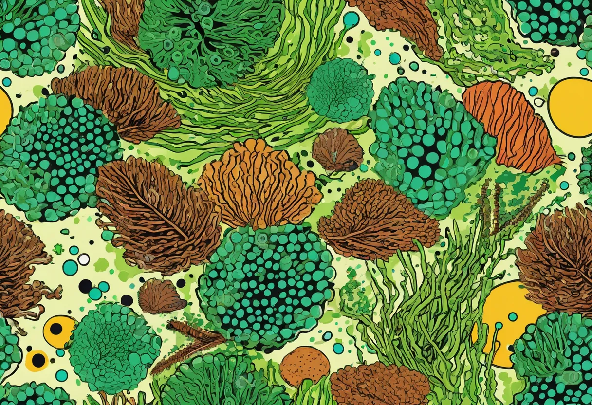

1. Einleitung: Algen sind normal – aber wann werden sie zum Problem?
Algen gehören zu jedem Aquarium. Sie entstehen dort, wo Licht, Wasser und Nährstoffe zusammenkommen – also in genau dem Lebensraum, den wir für Pflanzen, Fische, Garnelen und Mikroorganismen schaffen. Ein leichter grüner Belag auf Steinen, etwas Biofilm an der Rückwand oder ein paar feine Fäden zwischen schnell wachsenden Pflanzen sind deshalb zunächst völlig normal. Problematisch wird es erst, wenn Algen Pflanzen überwuchern, Scheiben in kurzer Zeit undurchsichtig machen, Dekorationen flächig bedecken oder wenn das Wasser grünlich und trüb wird.
Der wichtigste Grundsatz lautet: Algen sind Symptome, keine eigentliche Krankheit des Aquariums. Wer nur kratzt, absammelt oder ein Mittel ins Wasser gibt, beseitigt oft kurzfristig den sichtbaren Belag – die Ursache bleibt jedoch bestehen. Nachhaltige Algenbekämpfung bedeutet deshalb, die Algenart zu erkennen, die Auslöser zu verstehen und die Pflege so anzupassen, dass höhere Wasserpflanzen wieder den Vorteil bekommen.
Merke: Ein algenfreies Aquarium ist nicht automatisch ein gesundes Aquarium. Ziel ist ein stabiles Becken, in dem Pflanzen wachsen, Tiere aktiv sind und Algen nur in kleinen, unauffälligen Mengen vorkommen.
2. Die häufigsten Algenarten erkennen
Die richtige Bestimmung spart viel Zeit. Nicht jede Alge reagiert auf dieselben Maßnahmen: Kieselalgen verschwinden oft mit Geduld und besserer Beleuchtung, während Bartalgen häufig auf CO2-Schwankungen oder organische Belastung hinweisen. Die folgenden Merkmale helfen dir bei der schnellen Diagnose.
Fadenalgen (Grünalgen)
Fadenalgen bilden weiche, grüne Fäden, die sich zwischen Pflanzen, Wurzeln und Moosen verfangen. Sie lassen sich meist mit einer Zahnbürste aufwickeln und treten besonders häufig in frisch eingerichteten Pflanzenaquarien oder bei viel Licht und unausgewogener Düngung auf. Einzelne Fäden sind harmlos; dichte Teppiche können jedoch feinfiedrige Pflanzen beschatten und bremsen.
- Typisches Aussehen: hell- bis dunkelgrüne, lange Fäden oder Wattebüschel.
- Häufige Ursachen: zu lange Beleuchtungsdauer, Nährstoffspitzen, instabile CO2-Versorgung.
- Erste Hilfe: manuell entfernen, Lichtdauer reduzieren, schnell wachsende Pflanzen fördern.
Bartalgen / Pinselalgen
Bartalgen und Pinselalgen gehören zu den Rotalgen und erscheinen im Aquarium meist dunkelgrün, grau bis schwarz. Sie sitzen als kurze Büschel an Blatträndern, Filterauslässen, Wurzeln und Steinen. Besonders typisch ist ihr fester Halt: Man kann sie nicht einfach abwischen. Werden befallene Blätter älter oder geschwächt, breiten sich diese Algen oft stärker aus.
Häufig stehen Bartalgen mit schwankendem CO2, ungleichmäßiger Strömung, viel organischer Belastung oder selten gereinigten Filtern in Verbindung. In stark bepflanzten Becken hilft es, CO2 stabil zu halten, abgestorbene Pflanzenteile zu entfernen und Filter sowie Schläuche nicht verstopfen zu lassen.
Kieselalgen (braune Algen)
Kieselalgen zeigen sich als brauner, staubiger Belag auf Scheiben, Bodengrund, Dekoration und langsam wachsenden Pflanzen. Sie sind besonders in neu eingerichteten Aquarien häufig, weil sich das biologische System noch aufbaut. Auch schwaches Licht und Silikat im Wasser können die Ausbreitung begünstigen. Die gute Nachricht: Kieselalgen lassen sich meist leicht abwischen und verschwinden in vielen Becken nach einigen Wochen von selbst.
- Typisch bei: Einfahrphase, schwacher Beleuchtung, frischem Bodengrund oder Leitungswasser mit Silikat.
- Gegenmaßnahmen: Scheiben reinigen, regelmäßige Wasserwechsel, Pflanzenwuchs fördern, Geduld bewahren.
Grüne Punktalgen
Grüne Punktalgen bilden harte, runde Punkte auf Scheiben, Steinen und langsam wachsenden Pflanzen wie Anubias oder Bucephalandra. Sie lassen sich an der Scheibe meist nur mit einem Klingenreiniger entfernen. Punktalgen entstehen oft bei starkem Licht und einem ungünstigen Verhältnis von Phosphat zu anderen Nährstoffen. In Pflanzenaquarien kann eine gezielte Phosphatversorgung helfen – natürlich nur auf Basis von Messwerten und nicht nach Bauchgefühl.
Schwebealgen (grünes Wasser)
Wenn das Wasser milchig-grün oder intensiv grün erscheint, sind häufig einzellige Schwebealgen beteiligt. Das Aquarium wirkt dann wie ein Teich im Hochsommer: Die Dekoration ist kaum noch zu sehen, obwohl Filter und Scheiben sauber sein können. Auslöser sind oft Nährstoffüberschüsse, direkte Sonneneinstrahlung, zu lange Beleuchtung oder eine gestörte Mikroflora nach großen Reinigungsaktionen.
Schwebealgen lassen sich mechanisch kaum absammeln. Hier sind konsequente Ursachenarbeit, mehrere Wasserwechsel und in hartnäckigen Fällen ein UV-Klärer besonders effektiv.
Blaualgen (Cyanobakterien)
Blaualgen sind biologisch gesehen keine echten Algen, sondern Cyanobakterien. Sie bilden schmierige, blaugrüne bis dunkelgrüne Matten, riechen oft unangenehm erdig oder modrig und können Pflanzen sowie Bodengrund in kurzer Zeit überziehen. Charakteristisch ist, dass sich die Matten in zusammenhängenden Häuten abziehen lassen.
Weil Cyanobakterien auf ein deutlich gestörtes Milieu hinweisen können, sollte man sie ernst nehmen. Häufige Auslöser sind tote Zonen ohne Strömung, organische Verschmutzung, sehr niedrige Nitratwerte bei gleichzeitig vorhandenen anderen Nährstoffen oder vernachlässigte Pflege. Befallene Stellen sollten abgesaugt, abgestorbene Pflanzenreste entfernt und die Wasserzirkulation verbessert werden.
🛒 Hilfreich zur Algenbestimmung
Wassertests für Nitrat, Phosphat, Eisen und CO2-Dauertests helfen dir, die Ursache statt nur die Symptome zu bekämpfen.
👉 Wassertests bei Amazon ansehen3. Ursachenanalyse: Nährstoffe, Licht und CO2 verstehen
Algen entstehen selten wegen eines einzigen Fehlers. Meist verschiebt sich das Gleichgewicht aus Nährstoffen, Licht, CO2, Pflanzenmasse, Filterbiologie und Pflege. Wer die Ursache finden möchte, sollte deshalb nicht nur einen Wert betrachten, sondern das gesamte Becken analysieren.
Überschuss an Nährstoffen
Zu viel Futter, zu viele Fische, seltene Wasserwechsel, abgestorbene Pflanzenteile oder ein verschlammter Filter erhöhen die organische Belastung. Daraus entstehen Nährstoffspitzen, die Algen ausnutzen können. Wichtig ist aber: Nicht jeder hohe Messwert ist automatisch schlecht. Pflanzen brauchen Nitrat, Phosphat, Kalium, Eisen und Spurenelemente. Problematisch wird es, wenn einzelne Nährstoffe fehlen, andere im Überschuss vorhanden sind und Pflanzen dadurch nicht gleichmäßig wachsen können.
- Füttere nur so viel, wie die Tiere innerhalb weniger Minuten aufnehmen.
- Entferne abgestorbene Blätter beim wöchentlichen Pflegerundgang.
- Wechsle regelmäßig Wasser, statt nur verdunstetes Wasser nachzufüllen.
- Dünge Pflanzen gezielt und kontrolliert – nicht nach dem Prinzip „viel hilft viel“.
Falsches Licht
Licht ist der Motor des Pflanzenwachstums. Ist es zu schwach, kümmern Pflanzen und Kieselalgen profitieren. Ist es zu stark oder zu lange eingeschaltet, können Grünalgen und Punktalgen zulegen – besonders wenn CO2 und Nährstoffe nicht mithalten. Für die meisten Gesellschafts- und Pflanzenaquarien sind 6 bis 8 Stunden Beleuchtungsdauer ein sinnvoller Startpunkt. Neue Becken sollten eher moderat beleuchtet und erst mit zunehmender Pflanzenmasse gesteigert werden.
Mangelnde CO2-Versorgung
CO2 ist für Wasserpflanzen ein zentraler Baustein. Selbst ohne CO2-Anlage gibt es im Aquarium gelöstes Kohlendioxid, doch bei starker Beleuchtung und anspruchsvollen Pflanzen reicht die Menge oft nicht aus. Schwankungen sind besonders ungünstig: Wenn morgens kaum CO2 verfügbar ist, mittags viel und abends wieder wenig, geraten Pflanzen unter Stress – Algen nutzen diese Lücken. Ein CO2-Dauertest, gute Strömung und ein gleichmäßiger Tagesrhythmus helfen, Stabilität zu schaffen.
4. Mechanische & biologische Bekämpfung
Der erste Schritt gegen sichtbare Algen ist fast immer mechanisch: Scheiben reinigen, Fadenalgen aufwickeln, befallene Blätter zurückschneiden und Beläge absaugen. Dadurch reduzierst du die Algenmasse sofort und verhinderst, dass abgestorbene Algen später wieder Nährstoffe freisetzen. Wichtig ist, nicht das komplette Aquarium steril zu reinigen. Filtermaterial, Bodengrund und Dekoration beherbergen nützliche Bakterien, die das biologische Gleichgewicht stabilisieren.
Algenfressende Tiere: gute Helfer, aber keine Wunderwaffe
Algenfresser können die Pflege deutlich unterstützen, ersetzen aber keine Ursachenbehebung. Setze Tiere nie nur als „Werkzeug“ ein, sondern wähle Arten, die zu Beckengröße, Wasserwerten und Besatz passen.
- Saumwelse / Otocinclus: sehr gute Aufwuchsfresser für weiche Beläge und Kieselalgen, brauchen gut eingefahrene Becken und Gruppenhaltung.
- Amanogarnelen: fleißige Helfer gegen Fadenalgen und Futterreste, besonders effektiv in bepflanzten Aquarien.
- Schnecken: Rennschnecken, Geweihschnecken und Posthornschnecken weiden Beläge ab und halten Scheiben sowie Dekoration sauberer.
- Siamesische Rüsselbarben: können bei Bartalgen helfen, werden aber groß und sind nur für ausreichend große Becken geeignet.
Wer Garnelen oder Schnecken einsetzt, sollte auf kupferfreie Medikamente achten und sicherstellen, dass keine aggressiven Fische die Tiere stressen.
🛒 Praktische Algenhelfer für die Pflege
Algenmagnete, Klingenreiniger, Pflanzenscheren und Mulmsauger erleichtern die regelmäßige Aquarienpflege enorm.
👉 Pflegezubehör bei Amazon entdecken5. Chemische & technische Maßnahmen
Technik und chemische Mittel können sinnvoll sein, wenn sie gezielt eingesetzt werden. Sie sollten aber immer Teil eines Plans sein – nicht der Ersatz für Wasserwechsel, Pflanzenpflege und Ursachenanalyse.
UV-Klärer gegen grünes Wasser
Ein UV-Klärer führt Wasser an einer UV-C-Lampe vorbei. Dabei werden Schwebealgen und viele frei schwimmende Keime geschädigt, sodass das Wasser wieder klar wird. Besonders bei grünem Wasser ist diese Methode sehr effektiv. Gegen Fadenalgen, Bartalgen oder Punktalgen auf Oberflächen hilft ein UV-Klärer dagegen kaum, weil diese Algen nicht frei durch das Gerät treiben.
Algizide mit Vorsicht verwenden
Algizide können sichtbare Algen reduzieren, belasten aber je nach Produkt auch empfindliche Pflanzen, Garnelen, Schnecken oder Filterbakterien. Außerdem sterben Algen nicht spurlos: Zersetzen sie sich im Aquarium, werden Nährstoffe frei und Sauerstoff kann verbraucht werden. Wenn du ein Mittel nutzt, halte dich exakt an die Dosierung, entferne so viel Algenmasse wie möglich vorher und mache anschließend Wasserwechsel.
Wasserwechsel als Basismaßnahme
Regelmäßige Wasserwechsel sind die einfachste und zuverlässigste Maßnahme, um Nährstoffspitzen zu senken und frische Mineralien einzubringen. In vielen Becken funktionieren 30 bis 50 Prozent pro Woche sehr gut. Bei akutem Algenproblem können mehrere größere Wasserwechsel über einige Tage helfen, solange Temperatur und Wasserwerte nicht abrupt schwanken.
- Bei Fadenalgen: vorher absammeln, dann Wasser wechseln.
- Bei Cyanobakterien: Matten absaugen und tote Zonen beseitigen.
- Bei Schwebealgen: Licht reduzieren, Wasser wechseln und ggf. UV-Klärer nutzen.
- Bei Bartalgen: CO2, Strömung und organische Belastung prüfen.
🛒 Technik gegen hartnäckige Algenprobleme
UV-Klärer, CO2-Dauertests und Zeitschaltuhren helfen, Licht und Wasserqualität besser zu kontrollieren.
👉 Aquarium-Technik bei Amazon ansehen6. Vorbeugung: Das Aquarium dauerhaft stabil halten
Die beste Algenbekämpfung ist Vorbeugung. Ein stabiles Aquarium mit gesunden Pflanzen, passender Beleuchtung und regelmäßiger Pflege lässt Algen wenig Raum. Besonders wichtig ist die Startphase: Neue Becken haben noch keine stabile Filterbiologie und wenig Pflanzenmasse. In dieser Zeit sollten Licht und Düngung vorsichtig gesteigert werden.
Richtige Bepflanzung
Schnell wachsende Pflanzen sind starke Konkurrenz für Algen. Wasserpest, Hornkraut, Hygrophila, Limnophila, Rotala und Schwimmpflanzen nehmen Nährstoffe schnell auf und stabilisieren das System. Langsam wachsende Aufsitzerpflanzen wie Anubias sind wunderschön, sollten aber nicht die einzige Pflanzenmasse bilden, weil sie Nährstoffe langsamer verbrauchen.
Nährstoffbalance statt Nullwerte
Viele Aquarianer versuchen, Algen durch „nährstoffarmes“ Wasser auszuhungern. Das kann nach hinten losgehen: Fehlen Pflanzen wichtige Makro- oder Mikronährstoffe, wachsen sie schlechter – und Algen nutzen die Schwäche. Sinnvoller ist eine moderate, stabile Versorgung. Messe regelmäßig, beobachte neue Blätter und passe die Düngung schrittweise an.
Regelmäßige Pflege-Routine
Eine einfache Routine verhindert die meisten Probleme. Reinige jede Woche die Frontscheibe, entferne lose Blätter, kontrolliere Filterdurchfluss und schneide wuchernde Pflanzen zurück. Der Filter sollte nicht zu oft komplett gereinigt werden; spüle Filtermedien lieber in abgesaugtem Aquarienwasser aus, wenn der Durchfluss sichtbar nachlässt.
- Wöchentlich: 30–50 % Wasserwechsel, Scheibenpflege, abgestorbene Pflanzenteile entfernen.
- Alle 2–4 Wochen: Pflanzen zurückschneiden, Strömung prüfen, Technik reinigen.
- Monatlich: Wasserwerte kontrollieren, Düngung und Beleuchtungsdauer überprüfen.
- Dauerhaft: Fischbesatz maßvoll halten und abwechslungsreich, aber sparsam füttern.
7. Fazit: Algen als Indikator verstehen und das Gleichgewicht finden
Algen im Aquarium sind kein Grund zur Panik. Sie zeigen dir, dass irgendwo im System ein Ungleichgewicht entstanden ist – bei Licht, Nährstoffen, CO2, Pflege oder Besatz. Wer die Algenart erkennt und die Ursache Schritt für Schritt eingrenzt, bekommt auch hartnäckige Probleme meist in den Griff.
Beginne immer mit den Grundlagen: sichtbare Algen entfernen, Wasser wechseln, Pflanzen stärken, Lichtdauer prüfen und organische Belastung reduzieren. Erst danach sind Spezialmaßnahmen wie UV-Klärer oder Algizide sinnvoll. Mit Geduld, stabilen Routinen und gesundem Pflanzenwuchs wird aus einem veralgten Becken wieder ein klares, lebendiges Aquarium.
Wenn du dein Becken gerade neu startest, lies auch unseren Einsteiger-Guide für das erste Aquarium und den Artikel Aquascaping für Anfänger für mehr Pflanzen- und Layout-Tipps.